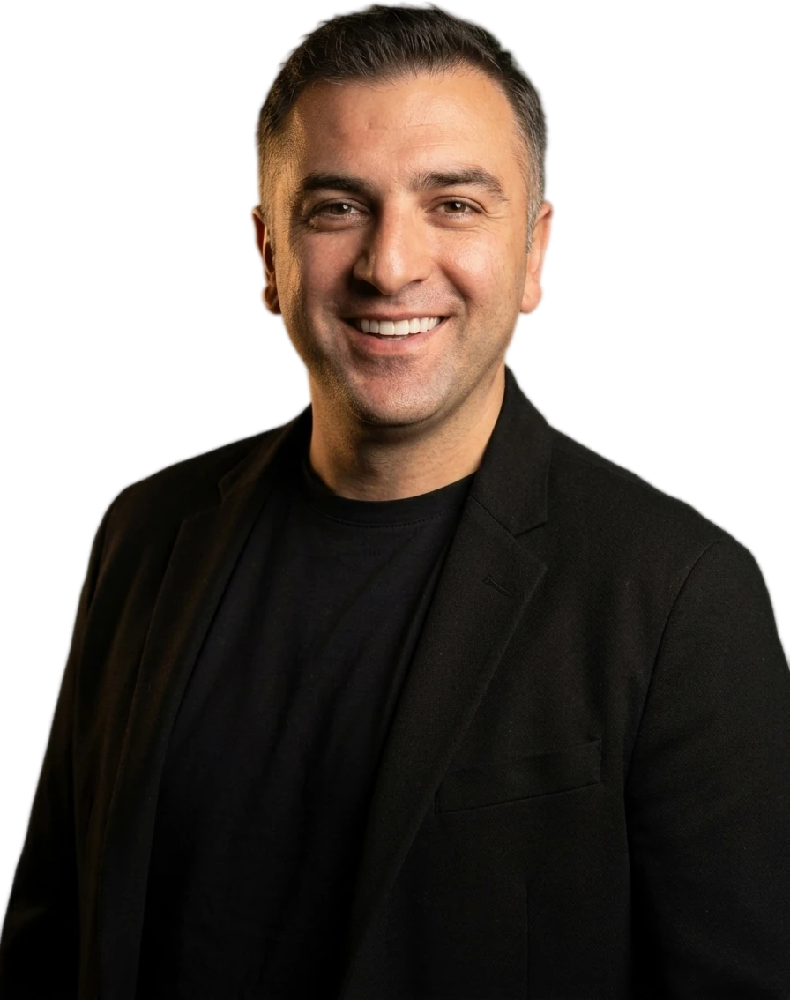
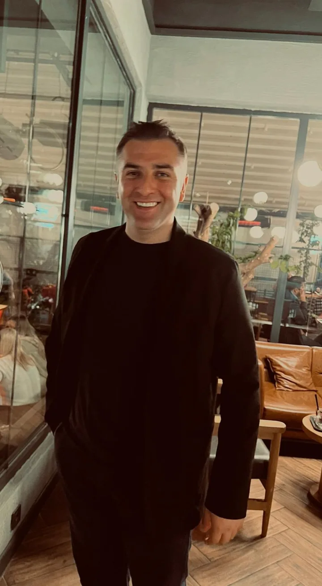
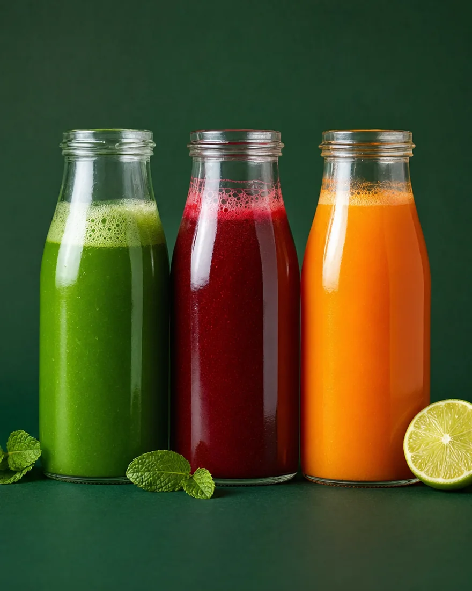

Ali Kırmaç

Sağlıklı olanı lezzetli ve ulaşılabilir kılan bir girişimci.
KaydırHakkında
Merhaba, ben Ali.
Ankara'da yaşayan bir girişimciyim. Detox Market'i tek bir fikirle kurdum: sağlıklı olan, aynı zamanda lezzetli ve ulaşılabilir de olmalı.
Soğuk sıkım meyve sularından doğal atıştırmalıklara kadar her ürünü kendim seçiyorum. Küçük bir ekiple, her gün, aynı özenle.

Taze.
Doğal.
Her gün.
-
01
Taze
Her gün taze sıkım. Isıl işlem yok, bekleme yok.
-
02
Doğal
Katkısız, şekersiz. Sadece gerçek meyve ve sebze.
-
03
Her gün
Küçük bir alışkanlık, büyük bir fark.
Detox Market
Soğuk sıkım.
Ankara'nın kalbinde.

Detox Market, Next Level AVM'de soğuk sıkım meyve suları, wellness shot'lar ve doğal atıştırmalıklar sunan bir sağlıklı yaşam markası.
Amacımız basit: günde bir küçük iyilik. Sabah bir yeşil detox, öğlen bir zencefil shot, akşam bir süper besin.
- Soğuk sıkımmeyve suları
- Wellnessshot'lar
- Doğalatıştırmalıklar
İletişim
Konuşalım.
Bir fikir, bir iş birliği ya da sadece bir merhaba için.
- Telefon
- 0532 382 29 180312 999 56 10
- E-posta
- alikirmac@yahoo.com